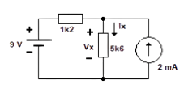

O Teorema da Superposição é aplicado em circuitos que possuem duas ou mais fontes de energia independentes.
Ele estabelece que a corrente ou a tensão em qualquer elemento do circuito é igual à soma algébrica dos efeitos produzidos por cada fonte atuando isoladamente.
Ou seja, analisamos uma fonte de cada vez, anulando as demais, e ao final somamos os efeitos (correntes ou tensões) de todas elas.
Durante o processo de análise, as fontes que não estão sendo consideradas devem ser anuladas:
a) Uma fonte de corrente é substituída por um circuito aberto (nenhuma corrente passa por ela).
b) Uma fonte de tensão é substituída por um curto-circuito (seus terminais ficam no mesmo potencial).
Considere o circuito abaixo, que contém duas fontes: uma fonte de tensão de 9 V e uma fonte de corrente de 2 mA. Os resistores são R₁ = 1,2 kΩ e R₂ = 5,6 kΩ.
O objetivo é determinar a corrente total e a tensão em R₂ aplicando o Teorema da Superposição.
Nesta etapa, a fonte de corrente de 2 mA é anulada — substituída por um circuito aberto. Assim, apenas a fonte de 9 V permanece ativa.
O circuito agora tem os resistores R₁ e R₂ em série, e a corrente total é:
R_eq = R₁ + R₂ = 1,2 k + 5,6 k = 6,8 kΩ
IA = 9 V / 6,8 kΩ = 1,32 mA
A tensão sobre R₂ (devida à fonte de 9 V) é:
VA = IA × R₂ = 1,32 mA × 5,6 kΩ = 7,39 V
Agora, a fonte de tensão de 9 V é anulada — substituída por um curto-circuito. A fonte de corrente de 2 mA permanece ativa.

Nesse caso, os resistores R₁ e R₂ ficam em paralelo com a fonte de corrente. A corrente que atravessa R₂ é determinada pelo divisor de corrente:
IB = 2 mA × (R₁ / (R₁ + R₂))
IB = 2 mA × (1,2 k / (1,2 k + 5,6 k)) = 0,35 mA
A tensão sobre R₂ (devida à fonte de 2 mA) é:
VB = IB × R₂ = 0,35 mA × 5,6 kΩ = 1,96 V
Finalmente, somamos os efeitos das duas fontes, respeitando polaridades e sentidos de corrente:
V_total = VA + VB = 7,39 V + 1,96 V = 9,35 V
I_total = IA + IB = 1,32 mA + 0,35 mA = 1,67 mA
Portanto, aplicando o Teorema da Superposição, obtemos: Corrente total em R₂ = 1,67 mA e Tensão em R₂ = 9,35 V.
O Teorema da Superposição mostra que o efeito combinado das fontes é igual à soma dos efeitos individuais.
Esse método é fundamental na análise de circuitos com múltiplas fontes, pois permite estudar cada fonte separadamente e depois somar os resultados.
Em resumo:
• Quando há várias fontes, analisa-se uma por vez;
• As demais são substituídas por suas condições de anulação;
• Os efeitos individuais são somados, respeitando o sentido das correntes e polaridades das tensões.